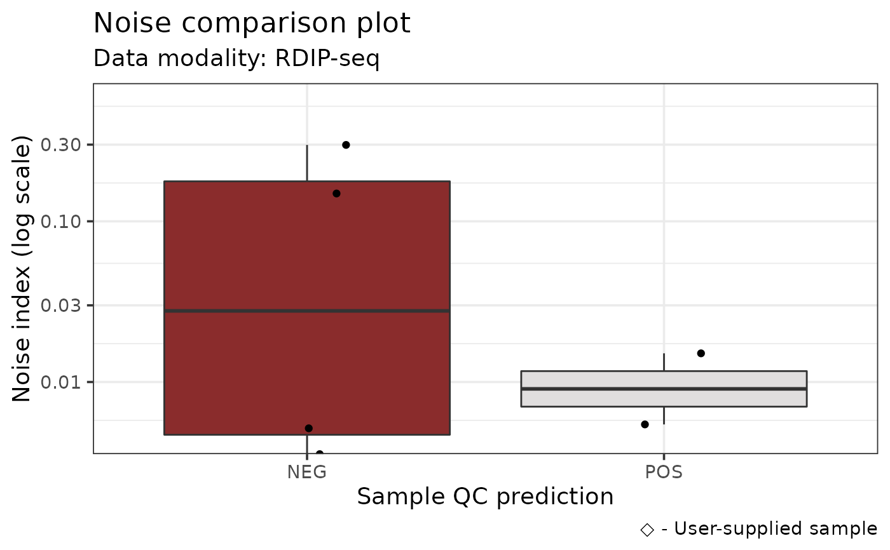

R/plots.R
noiseComparisonPlot.RdPlots the average standardized signal from noiseAnalyze alongside the samples in RLBase. For this plot, lower average signal indicates better signal to noise ratio. Note: This plot may be misleading if you supplied custom windows when running noiseAnalyze.
noiseComparisonPlot(object, mode = "auto", simple = TRUE, returnData = FALSE)An RLRanges object with noiseAnalyze already run.
A character containing the R-loop data mode to compare
against. See details for more information.
A logical which specifies whether the plot should only show
samples where the prediction and label are the same. Default: TRUE.
If TRUE, plot data is returned instead of plotting. Default: FALSE
A ggplot2::ggplot object or a tbl if returnData is TRUE.
The mode parameter specifies the R-loop modality to compare the
user-supplied sample against in the plot. The default, "auto"
specifies that the mode from the supplied RLRanges object will
be used. Only one mode can be specified. For a list of applicable modes,
see auxdata$available_modes.
The plot is a violin / jitter plot showing the distribution of average values
from the noiseAnalyze output across RLBase samples of the selected mode.
The user-supplied sample is annotated on the plot.
rlr <- readRDS(system.file("extdata", "rlrsmall.rds", package = "RLSeq"))
# Plot RL-Region overlap
noiseComparisonPlot(rlr)
#> see ?RLHub and browseVignettes('RLHub') for documentation
#> loading from cache
#> Warning: Removed 2 rows containing non-finite values (stat_boxplot).
#> Warning: Removed 2 rows containing missing values (geom_point).
#> Warning: Removed 2 rows containing missing values (geom_point).

# Return data only
noiseComparisonPlot(rlr, returnData = TRUE)
#> see ?RLHub and browseVignettes('RLHub') for documentation
#> loading from cache
#> # A tibble: 13 × 5
#> sample noise_index label prediction group
#> <chr> <dbl> <chr> <chr> <chr>
#> 1 SRX1029475 0.0151 POS POS RDIP
#> 2 SRX1029476 0.299 NEG NEG RDIP
#> 3 SRX1029477 0.00545 POS POS RDIP
#> 4 SRX1029478 0.149 NEG NEG RDIP
#> 5 SRX4732954 0.0139 POS NEG RDIP
#> 6 SRX4732955 0.0140 POS NEG RDIP
#> 7 SRX4732956 0.0177 POS NEG RDIP
#> 8 SRX4732957 0.0177 POS NEG RDIP
#> 9 SRX3892923 0.00506 NEG POS RDIP
#> 10 SRX6779957 0.00356 NEG NEG RDIP
#> 11 SRX6779959 0.00515 NEG NEG RDIP
#> 12 SRX7671349 NaN NEG NEG RDIP
#> 13 RDIP-Seq +RNH1 NaN NEG NEG User-supplied